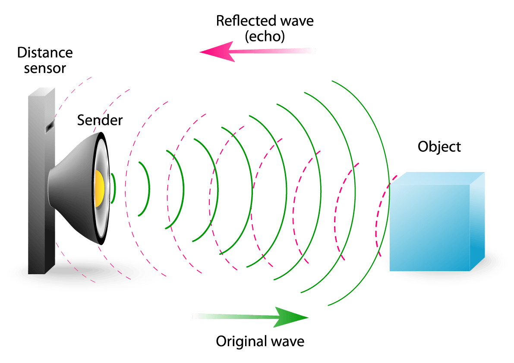

Technical Specification
Safety Concerns
Costs & Time
Designs & Art
The Problem & Constraints
Due to the fact that there are many hard surfaces the sound for the sound to bounce off of the engineering room echoes.
this can cause many issues for example the students and teachers might find it hard to understand each other
can result in poor academic performance for the student + make the teacher's job difficult
Some of the constraints of this project include:
$20 budget
Cannot cause permanent alterations to the building
Safety constraints (ex cannot block the sprinklers)
